IPython QtConsole 3.0.0
Python 3.4.3 |Anaconda 2.2.0 (32-bit)| (default, Mar 6 2015, 12:08:17) [MSC v.1600 32 bit (Intel)]
Type "copyright", "credits" or "license" for more information.
IPython 3.0.0 -- An enhanced Interactive Python.
Anaconda is brought to you by Continuum Analytics.
Please check out: http://continuum.io/thanks and https://binstar.org
? -> Introduction and overview of IPython's features.
%quickref -> Quick reference.
help -> Python's own help system.
object? -> Details about 'object', use 'object??' for extra details.
%guiref -> A brief reference about the graphical user interface.
In [1]: #1.) What was the change in price of the stock over time?
...: #2.) What was the daily return of the stock on average?
...: #3.) What was the moving average of the various stocks?
...: #4.) What was the correlation between different stocks' closing prices?
...: #4.) What was the correlation between different stocks' daily returns?
...: #5.) How much value do we put at risk by investing in a particular stock?
...: #6.) How can we attempt to predict future stock behavior?
...:
In [2]: # Imports
...: import pandas as pd
...: from pandas import Series,DataFrame
...: import numpy as np
...: import matplotlib.pyplot as plt
...: import seaborn as sns
...: sns.set_style('whitegrid')
...: %matplotlib inline
...:
...: from pandas.io.data import DataReader
...:
...: from datetime import datetime
...:
In [3]: tech_list = ['AAPL','GOOG','MSFT','AMZN']
In [4]: # Set up End and Start times for data grab
...: end = datetime.now()
...: start = datetime(end.year - 1,end.month,end.day)
...:
In [5]: #For loop for grabing yahoo finance data and setting as a dataframe
...:
...: for stock in tech_list:
...: # Set DataFrame as the Stock Ticker
...: globals()[stock] = DataReader(stock,'yahoo',start,end)
...:
In [6]: AAPL.describe()
Out[6]:
Open High Low Close Volume \
count 252.000000 252.000000 252.000000 252.000000 2.520000e+02
mean 113.000159 113.962698 111.945635 112.946230 5.222476e+07
std 12.979194 13.007481 12.828163 12.906610 2.028355e+07
min 90.209999 90.699997 89.650002 90.279999 1.447960e+07
25% 100.555000 101.462501 99.762499 100.750000 3.890938e+07
50% 112.500000 113.469998 111.535000 112.460000 4.784885e+07
75% 126.545000 127.487503 125.622501 126.484999 6.082465e+07
max 134.460007 134.539993 131.399994 133.000000 1.898463e+08
Adj Close
count 252.000000
mean 112.069990
std 13.355702
min 88.723094
25% 99.505033
50% 111.551952
75% 126.043506
max 132.539993
In [7]: AAPL.info()
<class 'pandas.core.frame.DataFrame'>
DatetimeIndex: 252 entries, 2014-06-23 to 2015-06-22
Data columns (total 6 columns):
Open 252 non-null float64
High 252 non-null float64
Low 252 non-null float64
Close 252 non-null float64
Volume 252 non-null int64
Adj Close 252 non-null float64
dtypes: float64(5), int64(1)
memory usage: 13.8 KB
In [8]: AAPL['Adj Close'].plot(legend=True,figsize=(10,4))
Out[8]: <matplotlib.axes._subplots.AxesSubplot at 0xdf0c090>
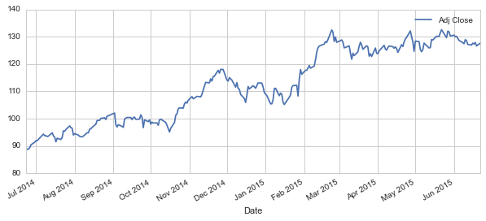
In [9]: AAPL['Volume'].plot(legend=True,figsize=(10,4))
Out[9]: <matplotlib.axes._subplots.AxesSubplot at 0xdffa1b0>
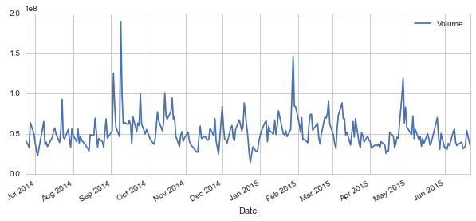
In [10]: # Plot some moving averages
...: ma_day = [10,20,50]
...:
...: for ma in ma_day:
...: column_name = "MA for %s days" %(str(ma))
...: AAPL[column_name]=pd.rolling_mean(AAPL['Adj Close'],ma)
...:
In [11]: AAPL[['Adj Close','MA for 10 days','MA for 20 days','MA for 50 days']].plot(subplots=False,figsize=(10,4))
Out[11]: <matplotlib.axes._subplots.AxesSubplot at 0xe1191d0>
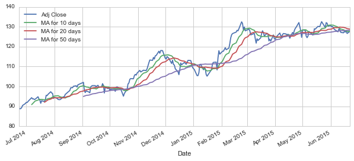
In [12]: AAPL['Daily Return'] = AAPL['Adj Close'].pct_change()
...: AAPL['Daily Return'].plot(figsize=(12,4),legend=True,linestyle='--',marker='o')
...:
Out[12]: <matplotlib.axes._subplots.AxesSubplot at 0xe088270>
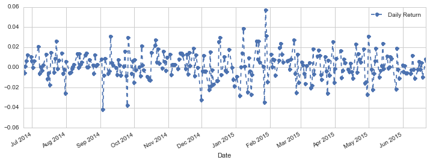
In [13]: sns.distplot(AAPL['Daily Return'].dropna(),bins=100,color='purple')
...:
Out[13]: <matplotlib.axes._subplots.AxesSubplot at 0xe0d4e50>
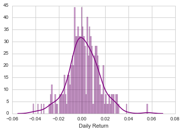
In [14]: closing_df = DataReader(['AAPL','GOOG','MSFT','AMZN'],'yahoo',start,end)['Adj Close']
In [15]: closing_df.head()
Out[15]:
AAPL AMZN GOOG MSFT
Date
2014-06-23 89.263612 327.239990 564.952579 40.908930
2014-06-24 88.723094 324.160004 564.622572 40.675107
2014-06-25 88.801716 327.440002 578.652627 40.947897
2014-06-26 89.332404 325.690002 576.002598 40.645881
2014-06-27 90.393781 324.570007 577.242632 41.162235
In [16]: tech_rets = closing_df.pct_change()
In [17]: # Comparing Google to itself using Seaborn
...: sns.jointplot('GOOG','GOOG',tech_rets,kind='scatter',color='seagreen')
Out[17]: <seaborn.axisgrid.JointGrid at 0xe48b7b0>
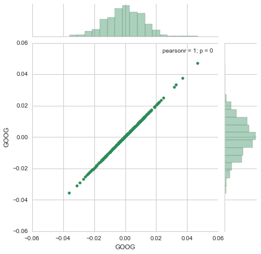
In [18]: # Using joinplot to compare the daily returns of Google and Microsoft
...: sns.jointplot('GOOG','MSFT',tech_rets,kind='scatter')
Out[18]: <seaborn.axisgrid.JointGrid at 0xe0dc990>
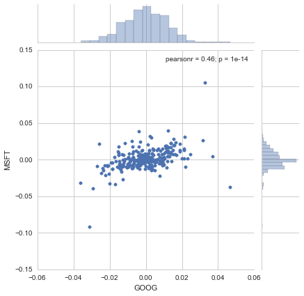
In [19]: sns.pairplot(tech_rets.dropna())
Out[19]: <seaborn.axisgrid.PairGrid at 0xefefef0>
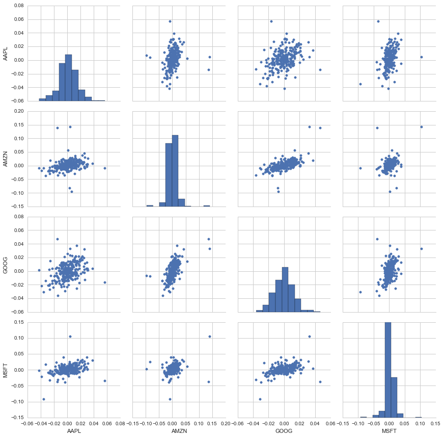
In [20]: returns_fig = sns.PairGrid(tech_rets.dropna())
...: returns_fig.map_upper(plt.scatter,color='purple')
...: returns_fig.map_lower(sns.kdeplot,cmap='cool_d')
...: returns_fig.map_diag(plt.hist,bins=30)
...:
...:
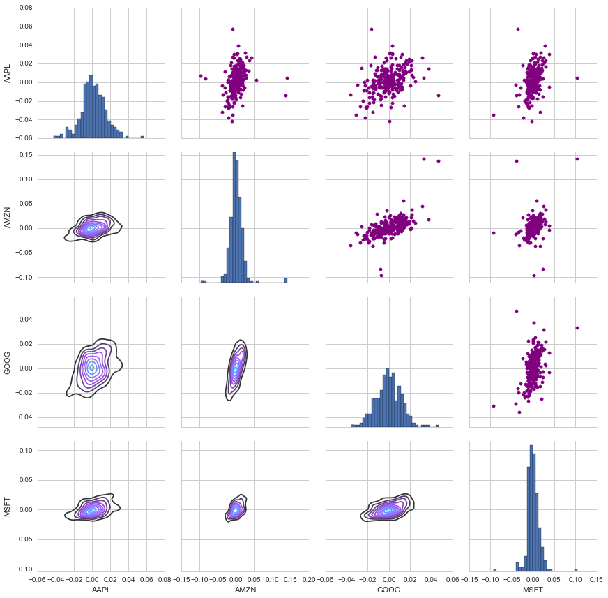
In [21]: returns_fig = sns.PairGrid(closing_df)
...: returns_fig.map_upper(plt.scatter,color='purple')
...: returns_fig.map_lower(sns.kdeplot,cmap='cool_d')
...: returns_fig.map_diag(plt.hist,bins=30)
...:
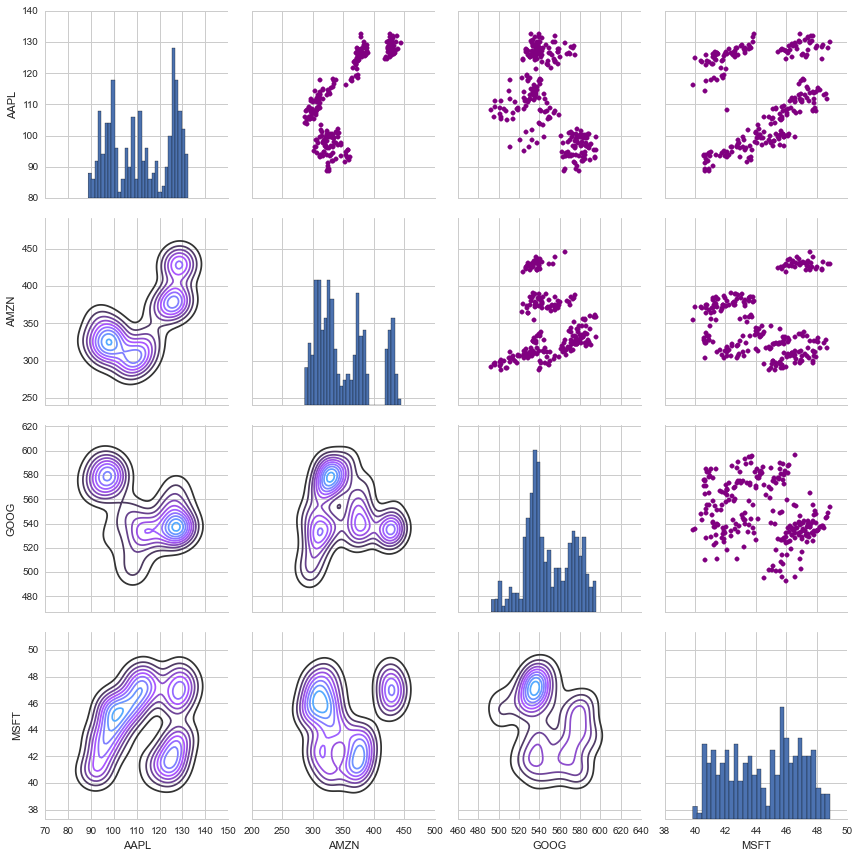
In [22]: sns.corrplot(tech_rets.dropna(),annot=True)
Out[22]: <matplotlib.axes._subplots.AxesSubplot at 0x12b783b0>
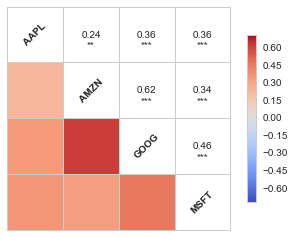
In [23]: # Doing some simple risk analysis
...: rets = tech_rets.dropna()
...:
...: area = np.pi*20
...:
...: plt.scatter(rets.mean(), rets.std(),alpha = 0.5,s =area)
...:
...: plt.ylim([0.01,0.025])
...: plt.xlim([-0.003,0.004])
...:
...: plt.xlabel('Expected returns')
...: plt.ylabel('Risk')
...:
...: for label, x, y in zip(rets.columns, rets.mean(), rets.std()):
...: plt.annotate(
...: label,
...: xy = (x, y), xytext = (50, 50),
...: textcoords = 'offset points', ha = 'right', va = 'bottom',
...: arrowprops = dict(arrowstyle = '-', connectionstyle = 'arc3,rad=-0.3'))
...:
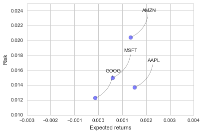
In [24]: sns.distplot(AAPL['Daily Return'].dropna(),bins=100,color='purple')
Out[24]: <matplotlib.axes._subplots.AxesSubplot at 0x12b5ceb0>
In [25]: rets['AAPL'].quantile(0.05)
Out[25]: -0.022282024022437341
In [26]: # Simple Monte Carlo simulation
...: days = 365
...:
...: dt = 1/days
...:
...: mu = rets.mean()['GOOG']
...:
...: sigma = rets.std()['GOOG']
...:
In [27]: def stock_monte_carlo(start_price,days,mu,sigma):
...:
...: # Price array
...: price = np.zeros(days)
...: price[0] = start_price
...: # Shock and Drift
...: shock = np.zeros(days)
...: drift = np.zeros(days)
...:
...: # Build array for number of days
...: for x in xrange(1,days):
...:
...: shock[x] = np.random.normal(loc=mu * dt, scale=sigma * np.sqrt(dt))
...: drift[x] = mu * dt
...: price[x] = price[x-1] + (price[x-1] * (drift[x] + shock[x]))
...:
...: return price
...:
In [28]: def stock_monte_carlo(start_price,days,mu,sigma):
...:
...: # Price array
...: price = np.zeros(days)
...: price[0] = start_price
...: # Shock and Drift
...: shock = np.zeros(days)
...: drift = np.zeros(days)
...:
...: # Build array for number of days
...: for x in range(1,days):
...:
...: shock[x] = np.random.normal(loc=mu * dt, scale=sigma * np.sqrt(dt))
...: drift[x] = mu * dt
...: price[x] = price[x-1] + (price[x-1] * (drift[x] + shock[x]))
...:
...: return price
...:
In [29]: # Price day 1
...: start_price = 555.15
...:
...: for run in range(100):
...: plt.plot(stock_monte_carlo(start_price,days,mu,sigma))
...: plt.xlabel("Days")
...: plt.ylabel("Price")
...: plt.title('Monte Carlo Analysis for Google')
...:
Out[29]: <matplotlib.text.Text at 0xfdd9cf0>
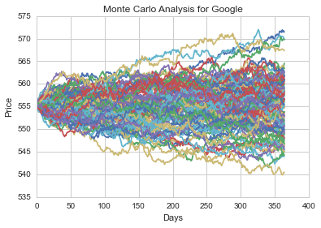
In [30]: runs = 10000
...: simulations = np.zeros(runs)
...: np.set_printoptions(threshold=5)
...: for run in xrange(runs):
...: simulations[run] = stock_monte_carlo(start_price,days,mu,sigma)[days-1]
...:
---------------------------------------------------------------------------
NameError Traceback (most recent call last)
<ipython-input-30-2e59966b895e> in <module>()
2 simulations = np.zeros(runs)
3 np.set_printoptions(threshold=5)
----> 4 for run in xrange(runs):
5 simulations[run] = stock_monte_carlo(start_price,days,mu,sigma)[days-1]
6
NameError: name 'xrange' is not defined
In [31]: runs = 10000
...: simulations = np.zeros(runs)
...: np.set_printoptions(threshold=5)
...: for run in range(runs):
...: simulations[run] = stock_monte_carlo(start_price,days,mu,sigma)[days-1]
...:
In [32]: q = np.percentile(simulations, 1)
...:
...: # Plotting the distribution of the end prices
...: plt.hist(simulations,bins=200)
...:
...: plt.figtext(0.6, 0.8, s="Start price: $%.2f" %start_price)
...:
...: plt.figtext(0.6, 0.7, "Mean final price: $%.2f" % simulations.mean())
...:
...: plt.figtext(0.6, 0.6, "VaR(0.99): $%.2f" % (start_price - q,))
...:
...: plt.figtext(0.15, 0.6, "q(0.99): $%.2f" % q)
...:
...: plt.axvline(x=q, linewidth=4, color='r')
...:
...: plt.title(u"Final price distribution for Google Stock after %s days" % days, weight='bold')
...:
Out[32]: <matplotlib.text.Text at 0xfd9d990>
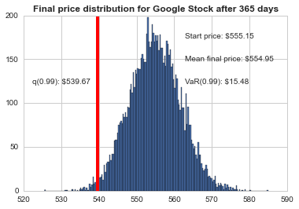
In [33]: